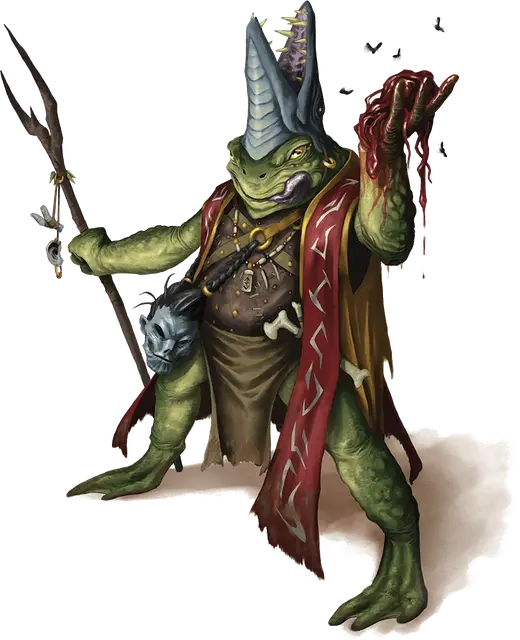

Фарблекс Спаттергу
Pharblex Spattergoo
Средний Гуманоид (Жаболюд), хаотично-злой, именной НИП

Класс Доспеха 15 (проклёпанный кожаный доспех, щит)
Хиты 59 (7к8 + 28)
Скорость 20 футов, плавая 40 футов
| мод | спас | ||
|---|---|---|---|
| СИЛ | 15 | +2 | +4 |
| ЛОВ | 12 | +1 | +1 |
| ТЕЛ | 18 | +4 | +6 |
| мод | спас | ||
|---|---|---|---|
| ИНТ | 11 | +0 | +0 |
| МДР | 16 | +3 | +3 |
| ХАР | 7 | −2 | −2 |
Навыки Восприятие +5, Религия +2, Скрытность +3
Чувства пассивное Восприятие 15
Языки Общий, Язык Жаболюдов
Опасность 3 (700 опыта)
Бонус мастерства +2
Особенности
Амфибия. Фарблекс может дышать под водой.
Ядовитый удар (3/день). Один раз за ход, когда Фарблекс попадает рукопашной атакой, он может потратить одно использование этой черты, чтобы нанести дополнительные 9 (2к8) урона ядом.
Использование заклинаний. Фарблекс является заклинателем 6-го уровня. Его базовой характеристикой является Мудрость (Сл спасброска от заклинаний 13, +5 к попаданию атакамм заклинаниями). У Фарблекса подготовлены следующие заклинания друида:
• Заговоры (по желанию): искусство друидов [druidcraft], указание [guidance], ядовитые брызги [poison spray]
• 1 уровень (4 ячейки): лечение ран [cure wounds], опутывание [entangle], лечащее слово [healing word], волна грома [thunderwave]
• 2 уровень (3 ячейки): дубовая кора [barkskin], животные чувства [beast sense], шипы [spike growth]
• 3 уровень (3 ячейки): рост растений [plant growth], хождение по воде [water walk]
Прыжок с места. Как часть передвижения Фарблекс может прыгнуть в длину на 20 футов или на 10 футов в высоту без разгона.
Болотный камуфляж. Фарблекс совершает проверки Ловкости (Скрытность) с преимуществом на болотной местности.
Действия
Мультиатака. Фарблекс совершает две атаки: одну - укусом и одну - копьём.
Укус. Рукопашная атака оружием: +5 к попаданию, досягаемость 5 футов, одна цель. Попадание: 4 (1к4+2) колющего урона.
Копьё. Рукопашная или Дальнобойная атака оружием: +5 к попаданию, досягаемость 5 футов или дистанция 20 / 60 футов, одна цель. Попадание: 5 (1к6+2) колющего урона.